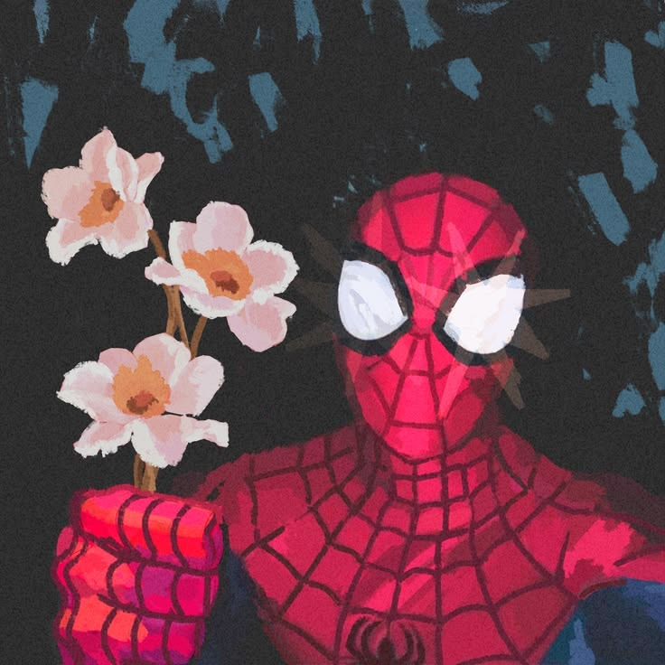

Where it starts
Studying Computer Engineering, Leyla is building a foundation across computing, electronics, and the systems that bring them together.
CREW FILE · LEYLA MAMMADLI
Leyla is a computer engineering student who loves exploring how technology works—from logic on a breadboard to creative code and robotics.
A few coordinates from a journey that is still unfolding.
Studying Computer Engineering, Leyla is building a foundation across computing, electronics, and the systems that bring them together.
By experimenting, making, and following a question until it turns into something tangible. Each project is an opportunity to try a new idea and learn from the result.
Digital logic, hands-on electronics, beginner-friendly coding, and robotics are some of the subjects currently appearing on Leyla's mission map.
Leyla is very good at drawing and enjoys watching movies. Her favorite movie is Spider-Man.

One small step at a time; the best parts of this journey are still ahead.
This portfolio is a snapshot of a curious learner in progress. More projects, experiences, and personal details will be added as the story continues.